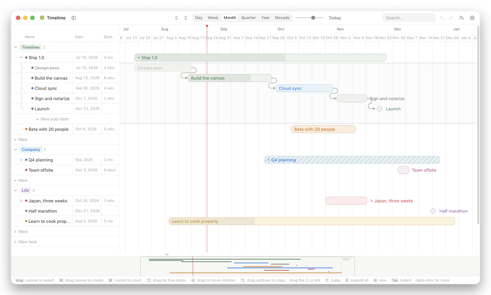

Plan projects and a whole life on one canvas.
A timeline app for macOS. Your plan lives on your Mac and works offline; sign in with Google and it follows you to every Mac you use.

What it does
- Blocks on a timeline, nested as deeply as you like, grouped into lanes.
- Dependencies between blocks, with dependents shifting when a date moves.
- Zoom from days out to decades.
- Optional sync across your Macs, merged per block so two machines never overwrite each other's edits.
Your data
The plan is stored on your Mac. Nothing leaves it unless you sign in, and the app works fully without an account. There is no analytics, no tracking and no advertising of any kind. See the privacy policy.
Download
Universal build for Apple Silicon and Intel, signed and notarized by Apple. Latest release.